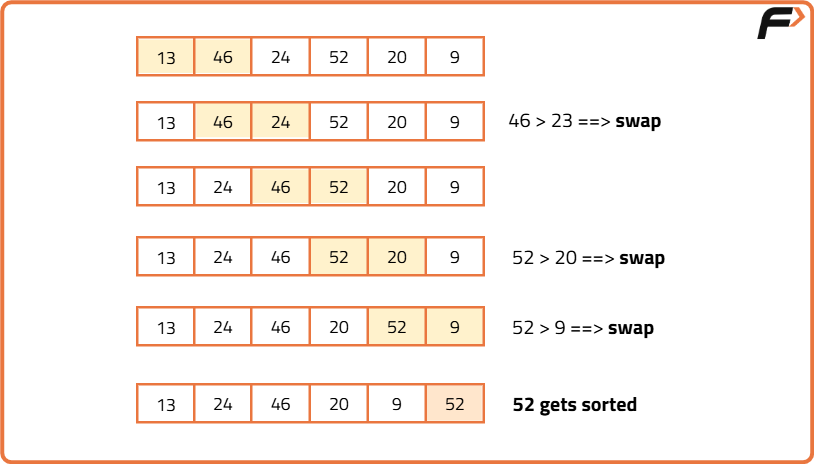

Recursive Bubble Sort Algorithm
Problem Statement: Given an array of N integers, write a program to implement the Recursive Bubble Sort algorithm.
Examples
Example 1:
Input: N = 6, array[] = {13,46,24,52,20,9}
Output: 9,13,20,24,46,52
Explanation: After sorting we get 9,13,20,24,46,52
Example 2:
Input: N = 5, array[] = {5,4,3,2,1}
Output: 1,2,3,4,5
Explanation: After sorting we get 1,2,3,4,5
Disclaimer: Here is the practice link to help you assess your knowledge better. It's highly recommend trying to solve it before looking at the solution.
Practice:
Brute Force Approach
Algorithm
In the iterative method, we usually select a range(using a loop), and for each range, we repeatedly swap(using another loop) the adjacent elements(if arr[i] > arr[i+1]) until the maximum element in that range reaches the end.


- First, call the recursive function with the given array and the range of n(size of the array).
- Inside that recursive function, repeatedly swap 2 adjacent elements if arr[j] > arr[j+1]. Here, the maximum element of the unsorted array reaches the end of the unsorted array after each recursive call.
- Each time after step 2, call the recursion again decreasing the range by 1.
- The recursion will continue until the range(i.e. the size) of the array is reduced to 1. Base Case: if(n == 1) return.
Dry Run

Code
#include <bits/stdc++.h>
using namespace std;
// Recursive function to perform Bubble Sort
void bubble_sort(int arr[], int n) {
// Base Case: If the array size is 1, it's already sorted
if (n == 1) return;
// Perform one pass of Bubble Sort: push the largest element to the end
for (int j = 0; j <= n - 2; j++) {
// Swap if elements are in the wrong order
if (arr[j] > arr[j + 1]) {
int temp = arr[j + 1];
arr[j + 1] = arr[j];
arr[j] = temp;
}
}
// Recur for the remaining unsorted part (one less than before)
bubble_sort(arr, n - 1);
}
int main() {
int arr[] = {13, 46, 24, 52, 20, 9};
int n = sizeof(arr) / sizeof(arr[0]);
cout << "Before Using Bubble Sort: " << endl;
for (int i = 0; i < n; i++)
cout << arr[i] << " ";
cout << endl;
// Call the recursive Bubble Sort function
bubble_sort(arr, n);
cout << "After Using Bubble Sort: " << endl;
for (int i = 0; i < n; i++)
cout << arr[i] << " ";
cout << endl;
return 0;
}
Complexity Analysis
Time Complexity: O(N2), (where N = size of the array), for the worst, and average cases.
Space Complexity: O(N) auxiliary stack space.
Optimal Approach
Algorithm
- We will check in the first recursion call if any swap is taking place. If the array is already sorted no swap will occur and we will return from the recursion call.
- Thus the number of recursions will be just 1. And our overall time complexity will be O(N).
Code
#include <bits/stdc++.h>
using namespace std;
// Recursive Bubble Sort with early exit optimization
void bubble_sort(int arr[], int n) {
// Base Case: if the size is 1, it's already sorted
if (n == 1) return;
int didSwap = 0; // Flag to check if any swap occurred in this pass
// One pass: push the largest element to the end
for (int j = 0; j <= n - 2; j++) {
if (arr[j] > arr[j + 1]) {
// Swap arr[j] and arr[j + 1]
int temp = arr[j + 1];
arr[j + 1] = arr[j];
arr[j] = temp;
didSwap = 1; // Mark that we did a swap
}
}
// If no swap happened, array is already sorted
if (didSwap == 0) return;
// Recurse for the remaining unsorted portion
bubble_sort(arr, n - 1);
}
int main() {
int arr[] = {13, 46, 24, 52, 20, 9};
int n = sizeof(arr) / sizeof(arr[0]);
cout << "Before Using Bubble Sort: " << endl;
for (int i = 0; i < n; i++) {
cout << arr[i] << " ";
}
cout << endl;
bubble_sort(arr, n);
cout << "After Using Bubble Sort: " << endl;
for (int i = 0; i < n; i++) {
cout << arr[i] << " ";
}
cout << endl;
return 0;
}
Complexity Analysis
Time Complexity: O(N2) for the worst and average cases and O(N) for the best case. Here, N = size of the array.
Space Complexity: O(N) auxiliary stack space.